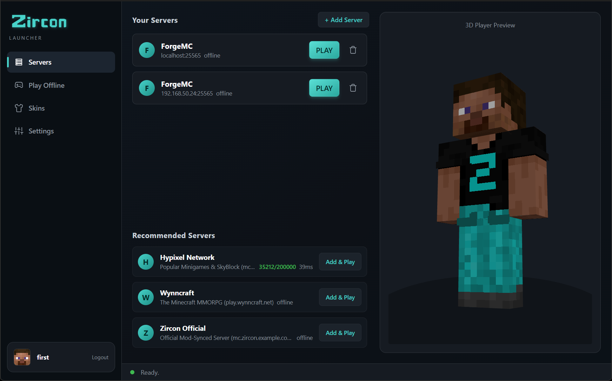

Zircon is a free launcher for modded Minecraft servers. Pick a server, hit PLAY, and the exact mods that server runs install themselves — verified against Modrinth on every launch. No modpack hunting. No version guessing.

Sign in, pick your server, hit PLAY — the mods take care of themselves.
Scrolling mod sites for "the right build" and hoping it matches what your friends are running.
Manually dropping mod files into mods/ and deleting the ones that crash on launch.
Comparing configs with your friend at 1am, one mismatch at a time, while the server sits empty.
Built for people who want to play modded Minecraft with friends — not spend their evening reconciling mod versions and crash logs.
Hit PLAY and Zircon downloads the right Minecraft version and mod loader — Fabric, Quilt, Forge, or NeoForge — installs the mods, and drops you straight into the game.
Your server's mod list syncs to your launcher — nothing missing, nothing stale. Every file is checked against Modrinth before it's installed.
Official Microsoft sign-in — your password goes to Microsoft, never to Zircon. No shared logins, no cracked launchers, no offline workarounds.
Upload a 64×64 skin with a live 3D preview and sync it to your Mojang account. Show up looking right on every server you join.
Servers can offer their own shaders and resource packs. Zircon applies them when you join — you just say yes once, and it's done.
Create offline single-player instances with their own mods, shaders, and texture packs. No server required — just build in peace.
One click, in your browser. Zircon uses the official Microsoft flow — your password never touches the app.
Your saved servers, most recently played first — plus recommendations. Each server brings its own mod list along.
Zircon syncs and verifies the mods, wakes the server if it's asleep, and connects you. You spawn in — fully modded, ready to go.
Zircon's server manager pairs with the launcher, so your players install exactly what you run. No setup guides. No support tickets.
Download Zircon, sign in with your Microsoft account, and join a server. The mods will be waiting for you — verified, synced, ready.
Download Zircon Launcher View Source on GitHub